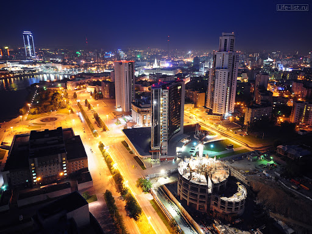

Екатеринбург
Екатеринбу́рг — город в России, административный центр Уральского федерального округа и Свердловской области. Образует муниципальное образование город Екатеринбург со статусом городского округа. Является крупнейшим административным, культурным, научно-образовательным центром Урала.

Екатеринбург — четвёртый по численности населения (после Москвы, Санкт-Петербурга и Новосибирска) город в России. Екатеринбургская агломерация — четвёртая по величине агломерация России.
Расположен на восточном склоне Среднего Урала, по берегам реки Исети.